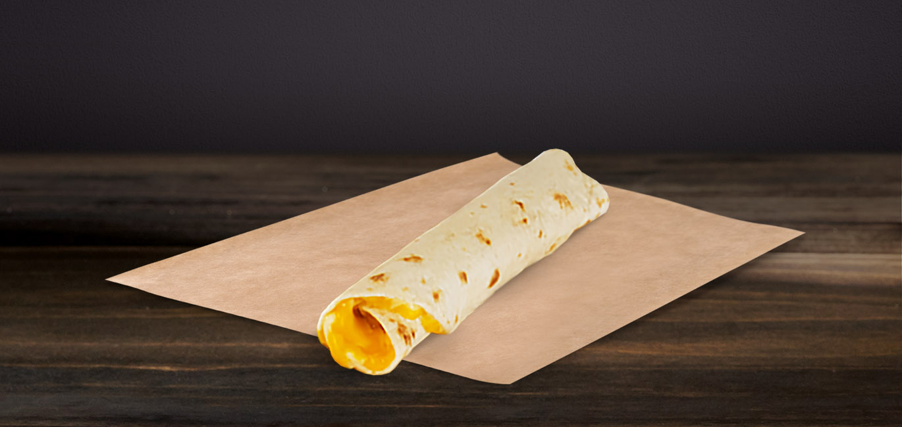

Cheese Rollup

Description:
The cheese rollup is super simple and super quick to make. It always makes a nice snack that never fails to satisfy.
Ingredients:
- 8 4-inch round tortillas
- 2 cups Shredded Cheese (Any kind, but preferably pepperjack)
- 2 tbsp melted butter
Steps:
- Preheat oven to 350 degrees
- Line baking sheet with parchment paper
- Place tortilla down, brush with melted butter, and place a handful of cheese over the surface
- Roll tortilla and cheese up, brush with more melted butter and set on to lined baking sheet
- Once all tortillas are prepared, place in 350 degree oven for 10 - 15 minutes, flipping the cheese rollups every 5 minutes until cheese is melted and tortilla is golden brown.
- Serve with favorite dip or hot sauce. Adding chicken or beef in with the cheese is also a great addition!